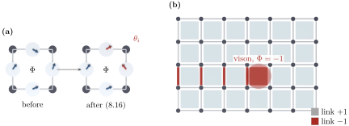
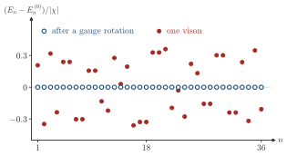
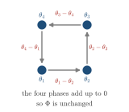

Page 8 of 11 of this session
8.10 Emergent gauge symmetry and vison excitations
What does the rewriting of a spin with fermions add that the spin itself did not have? We will now see that it adds the freedom to change the phase of the fermions on each site, (8.16). Under this change the phases of the mean-field hoppings change, while their product around a plaquette, the flux, does not. A plaquette whose flux is flipped with respect to the others is a topological defect of this gauge field, which is called a vison.
\[\mathbf S_i = \frac12 \sum_{\alpha\beta} f_{i\alpha}^\dagger\, \boldsymbol\sigma_{\alpha\beta}\, f_{i\beta}, \tag{8.10}\]
\[\sum_\sigma f_{i\sigma}^\dagger f_{i\sigma} = 1 \qquad \text{at every site } i. \tag{8.11}\]
This is the spin of site \(i\) written with the auxiliary fermions \(f_{i\uparrow}\) and \(f_{i\downarrow}\) of Section 8.8, and the constraint of one fermion per site that makes this rewriting exact. Both contain the fermions of one site only in the pairs \(f^\dagger_{i\alpha}f_{i\beta}\).
There is one more essential part of the QSL picture, and it comes directly from the fact that we introduced fermions to describe a spin. Let us take a local phase rotation of the auxiliary fermions that depends on the site.
A local phase rotation of the auxiliary fermions is
\[f_{i\sigma} \;\to\; e^{i\theta_i}\, f_{i\sigma}, \qquad f^\dagger_{i\sigma} \to e^{-i\theta_i} f^\dagger_{i\sigma}. \tag{8.16}\]
Under it the spin (8.10) and the constraint (8.11) do not change, while the phase \(\theta_{ij}\) of each mean-field hopping changes by \(\theta_i-\theta_j\). The flux \(\Phi=\prod e^{i\theta_{ij}}\), the product of these phases around a plaquette, does not change, so the flux and not the phase of one link is the physical quantity.
Both the physical spin operator (8.10) and the single-occupancy constraint (8.11) do not change at all under (8.16). The phase \(e^{i\theta_i}\) cancels between \(f^\dagger_{i\alpha}\) and \(f_{i\beta}\) in every term, so the Hamiltonian and the physical spin operators are invariant. The mean-field bond variable \(\chi_{ij}\) of (8.15), however, is not invariant, since it gets a relative phase, \(\chi_{ij} \to e^{i(\theta_i - \theta_j)}\chi_{ij}\).
The steps Why the flux does not change under (8.16)
We take the hopping of (8.15), which is the coefficient \(\chi_{ij}=|\chi_{ij}|e^{i\theta_{ij}}\) of \(f^\dagger_{is}f_{js}\). Let us start with one site. Under (8.16) every pair of operators of the same site gets
\[f^\dagger_{i\alpha}f_{i\beta}\;\to\;e^{-i\theta_i}e^{i\theta_i}\,f^\dagger_{i\alpha}f_{i\beta}=f^\dagger_{i\alpha}f_{i\beta},\]
so the spin (8.10) and the number of fermions in (8.11) do not change. A pair of two sites is different, since \(f^\dagger_{is}f_{js}\to e^{-i(\theta_i-\theta_j)}f^\dagger_{is}f_{js}\). Written with the rotated fermions, (8.15) has the same form with the new coefficients
\[\chi_{ij}\;\to\;e^{i(\theta_i-\theta_j)}\chi_{ij},\qquad \theta_{ij}\;\to\;\theta_{ij}+\theta_i-\theta_j,\]
and the levels do not change. Now we go once around a plaquette with the sites \(1\), \(2\), \(3\) and \(4\). The flux is the product of the four link phases in this order, so its phase changes by
\[(\theta_1-\theta_2)+(\theta_2-\theta_3)+(\theta_3-\theta_4)+(\theta_4-\theta_1)=0 .\]
Each site angle appears once with each sign, so \(\Phi\) does not change for any choice of the \(\theta_i\), and the same holds around any closed loop of the lattice. The expectation value of the bond operator of (8.12) gets the opposite phase, \(e^{-i(\theta_i-\theta_j)}\), and its product around a plaquette does not change either, since the same sum is zero.
This is the structure of a lattice gauge theory. The variable \(\chi_{ij}\) behaves as a link variable, and (8.16) is a local transformation, which is called a gauge transformation. The physical spin theory is invariant under it, while the mean-field saddle point of Section 8.9 is not. Any two choices of \(\chi_{ij}\) that are related by (8.16) describe the same physical quantum spin liquid, so the mean-field decoupling only fixes a class of gauge-equivalent solutions and not a unique set of hoppings. This redundancy is the origin of an emergent gauge theory for quantum spin liquids.
Once we see this gauge structure, \(\chi_{ij}\) becomes a dynamical field on the links of the lattice, and it can have its own topological defects. This is in direct analogy with the superconducting order parameter, whose gauge degree of freedom of Section 5.7 can have vortices.
Let us write the mean-field Hamiltonian as \(\mathcal H = \sum_{ij,s}|\chi_{ij}|e^{i\theta_{ij}}f^\dagger_{i,s}f_{j,s}\), and let us define the flux through a plaquette as the product of the phases that we pick up when we go around its boundary, \(\Phi = \prod e^{i\theta_{ij}}\). For concreteness, let us take a square lattice where the hoppings around every elementary loop pick up the phase \(\Phi=+1\), except for one loop, where the phase is \(\Phi=-1\).
This single flipped plaquette is a topological defect in the emergent gauge field, and it is called a vison. It is an excitation when the background has the flux of the ground state. For spinons at half filling on the square lattice with a fixed \(|\chi|\) this is the flux \(\pi\), with \(\Phi=-1\) on every plaquette, so there the vison is one plaquette with \(\Phi=+1\). The vison is the excitation of the gauge sector, and in general it is coupled to the spinon excitations of the matter sector that we built in Section 8.9. In this language, a quantum spin liquid is described not only by its spinon dispersion but also by an emergent gauge theory and by the vison excitations of that theory. This is a new organizing principle, and nothing like it exists in the symmetry-broken magnets of Session 6.
There is no notebook exercise for this construction, which is a purely conceptual and formal part of the QSL picture. Figure 8.5 shows both parts of it, why the flux and not the link variable is the physical quantity, and what a single flipped flux looks like on the lattice.


We rotate the phase of the fermions on every site,
\[f_{i\sigma} \;\to\; e^{i\theta_i}\, f_{i\sigma}, \qquad f^\dagger_{i\sigma} \to e^{-i\theta_i} f^\dagger_{i\sigma}.\]
Which of these objects changes?
Show the answers
- A. ✗ False
This is false. The constraint counts \(f^\dagger_{i\uparrow}f_{i\uparrow}+f^\dagger_{i\downarrow}f_{i\downarrow}\) on a site. Each term has \(e^{-i\theta_i}e^{i\theta_i}=1\), so the count is the same.
- B. ✗ False
This is false. It is built from \(\mathbf S_i\cdot\mathbf S_j\), and each \(\mathbf S_i\) is unchanged. For \(\theta_i=\pi/2\) on one site, \(f^\dagger_{i\uparrow}f_{i\downarrow}\) still gets \((-i)(i)=1\).
- C. ✓ True
This is true. The phases cancel in every product \(f^\dagger_{i\alpha}f_{i\beta}\) on the same site, so the spin operator and the constraint do not change. Only the link variable between two sites picks up a phase, and this is what makes it a gauge field.
The flux \(\Phi\) of a plaquette is the product of its four hopping phases. We rotate the fermions on its four sites by angles \(\theta_i\). How does \(\Phi\) change?
Show the answers
- A. ✗ False
This is false. Take the same angle \(\theta\) on the four sites. Every link gets \(\theta-\theta=0\), so nothing changes, while the sum would be \(4\theta\).
- B. ✓ True
This is true. Going around the plaquette we pick up \(\theta_i-\theta_j\) on each link, and the sum telescopes to zero. The flux is physical, and this is why the vison, a plaquette whose flux is flipped, cannot be removed.

The phases that the four links of a plaquette pick up under the gauge rotation add up to zero, since every \(\theta_i\) appears once with each sign. - C. ✗ False
This is false. Take \(\theta_1=\pi/2\) and the other angles zero. The link \(12\) gets \(e^{i\pi/2}=i\) and the link \(41\) gets \(e^{-i\pi/2}=-i\), and the product is \(1\), so \(\Phi\) keeps its sign.
Each picture shows a plaquette with the hopping \(\chi_{ij}=\pm1\) on each link. The flux is the product of the four hoppings,
\[\Phi=\chi_{12}\,\chi_{23}\,\chi_{34}\,\chi_{41}.\]
Which plaquette has \(\Phi=-1\)?
Show the answers
- A. ✗ False
This is false. The product is \((-1)(+1)(-1)(+1)=+1\). The rotation \(\theta_i=\pi\) on the two sites of the left side gives this plaquette from the one with all hoppings \(+1\), so the two have the same flux.
- B. ✓ True
This is true. Only one hopping is \(-1\), so \(\Phi=-1\). A phase rotation of the sites cannot change this product, so no choice of the \(\theta_i\) brings this plaquette back to \(\Phi=+1\).
- C. ✗ False
This is false. The product is \((-1)^4=+1\). The rotation \(\theta_i=\pi\) on two opposite corners changes the sign of all four links, so this plaquette has the same flux as the one with all hoppings \(+1\).
On an open square lattice of \(L\times L\) sites all the hoppings are \(\chi_{ij}=1\). We set \(\chi_{ij}=-1\) on \(n\) vertical links between the same two rows, the first at the left edge and the others next to it, with \(1\le n\le L-1\). Show that one plaquette has \(\Phi=-1\) and all the others have \(\Phi=+1\), and find where it sits.
Solution
A plaquette between the two rows has two vertical links, one on its left and one on its right, and its two horizontal links have \(\chi=1\). We count the vertical links from \(1\) at the left edge, so the plaquette number \(m\) has the links \(m\) and \(m+1\), with \(m\) from \(1\) to \(L-1\). For \(m<n\) both links are in the string, and \(\Phi=(-1)^2=+1\). For \(m=n\) only the left link is in the string, and \(\Phi=-1\). For \(m>n\) neither is, and \(\Phi=+1\). The plaquettes of the other rows have no link of the string. So the only plaquette with \(\Phi=-1\) is the one at the end of the string, the plaquette \(m=n\), and it exists since \(n\le L-1\). For \(n=L\) the string crosses the whole lattice and every plaquette has \(\Phi=+1\). On the \(6\times6\) lattice of Schematic 8.9, with \(n=3\), this is one of the \(25\) plaquettes, so the fluxes add up to \(23\).
A string of horizontal links from the bottom edge that ends at the same plaquette gives the same fluxes, and the two strings differ by a gauge rotation (8.16). So the levels of Schematic 8.9 depend only on where the string ends, and a calculation can put the string anywhere.
- In Section 10.6b the Ising gauge theory has spins on the links. A flip of the four bonds at a vertex is a local gauge transformation, and it leaves every plaquette product the same, as for the flux here.
- In Section 10.6 phases with a local order parameter are separated from phases with topological order, and the gauge theory of Section 10.6b is the case where a local order parameter fails.